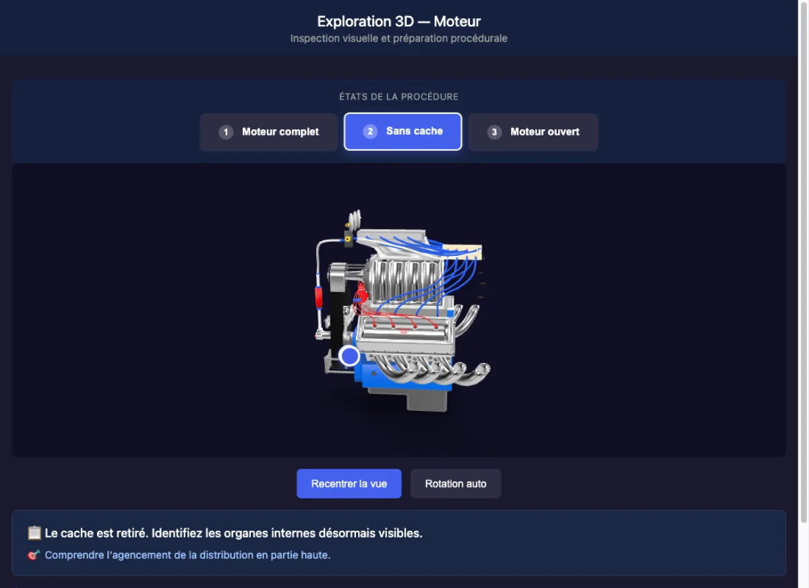
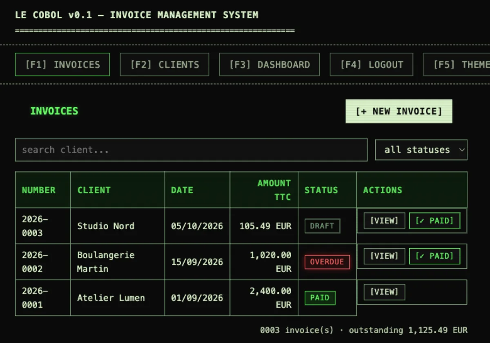
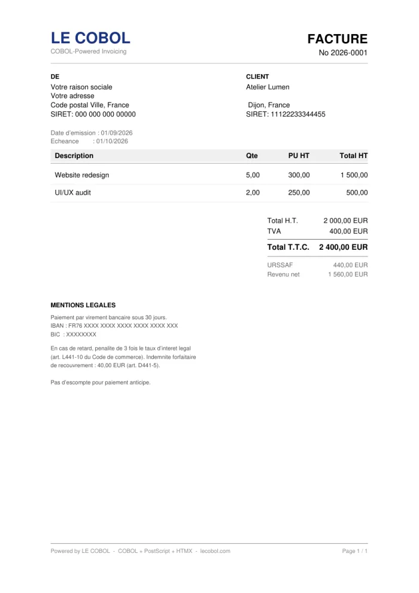
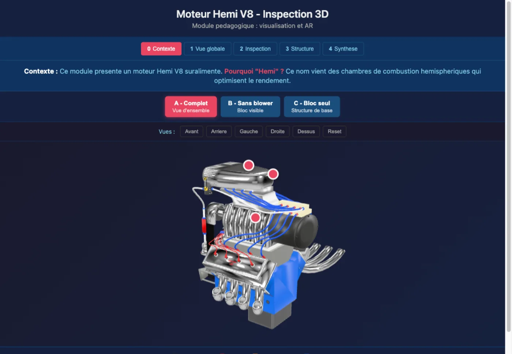
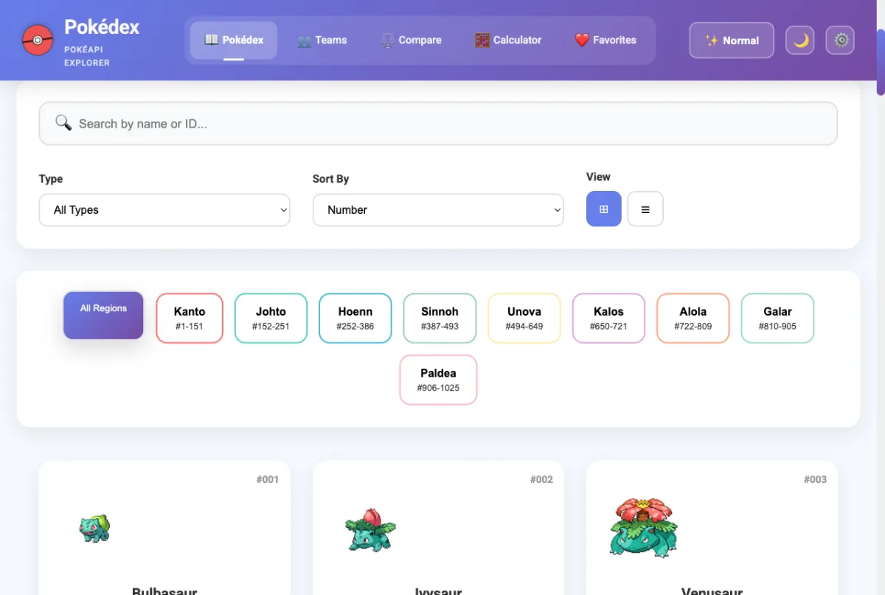
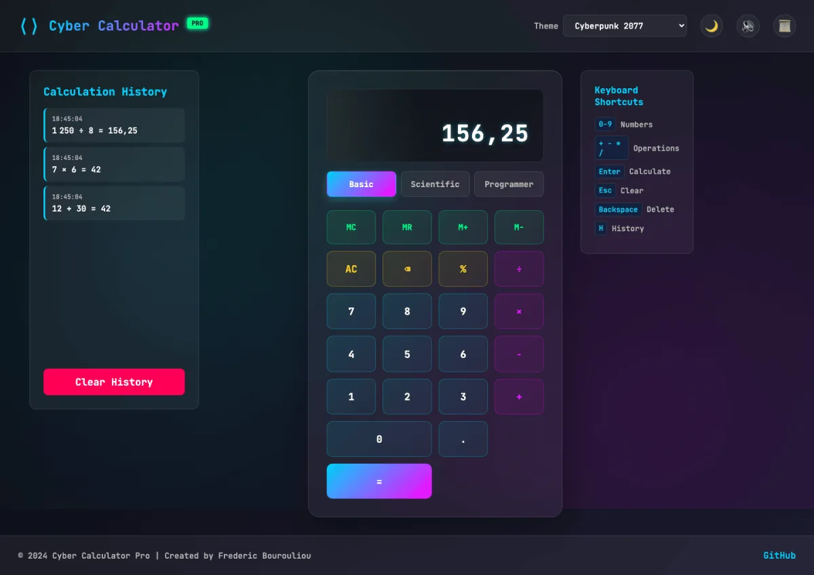
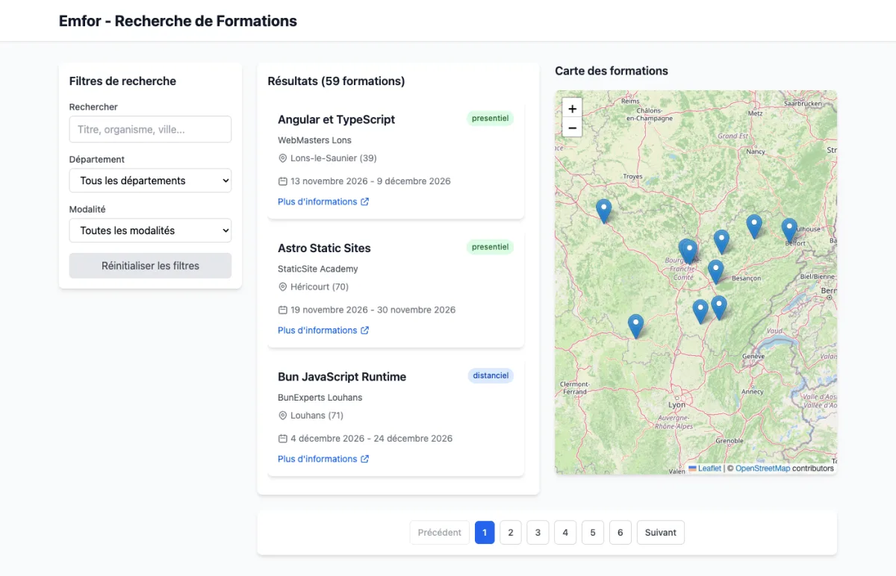
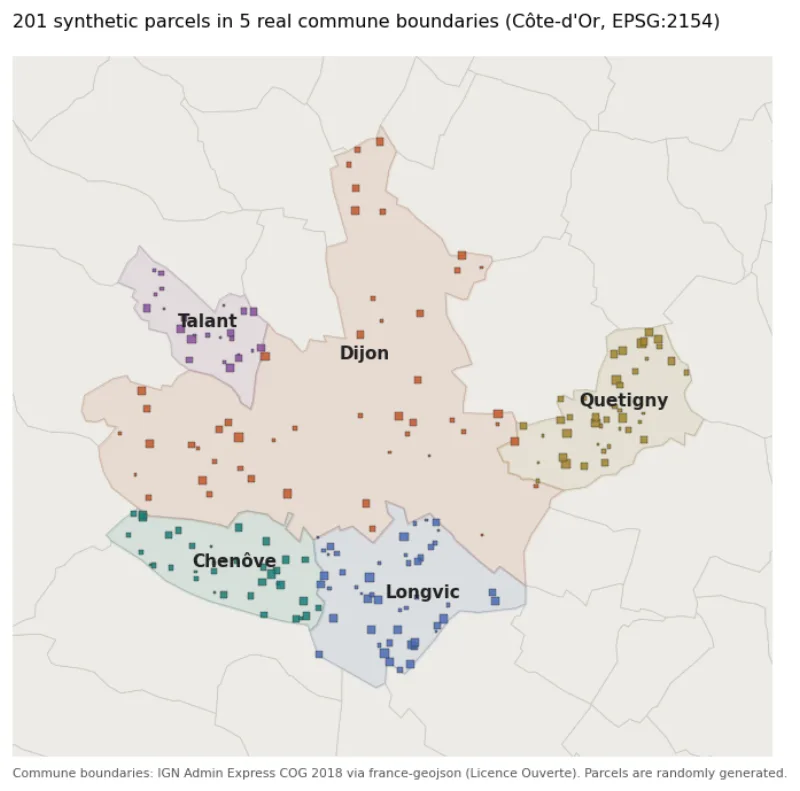

Engine exploration
The same engine as a step-by-step procedure: each step removes a part and comes with an instruction, an objective and hotspots.

Frédéric Bourouliou
Literature teacher for nineteen years, now instructional engineer and developer in Dijon, France. What follows is a catalogue of things I made. Each one can be opened, run or read.
An invoicing web app for French freelancers, written in COBOL. Exact decimal arithmetic, one compiled binary per endpoint behind Apache CGI, PDFs drawn in hand-written PostScript, an HTMX interface. Runs with a single docker run.


A training module to explore a supercharged engine before touching the real one in the workshop: five guided phases, disassembly states exported from Blender, augmented reality on a phone. Nothing to install.

The same engine as a step-by-step procedure: each step removes a part and comes with an instruction, an objective and hotspots.

A reading companion for iOS: scan a printed page, listen to it, discuss it with an AI tutor, or read a classic from Project Gutenberg.
All 1,025 Pokémon from PokéAPI: browse by region, filter by type, compare stats, estimate damage.

Basic, scientific and programmer modes, with exact hexadecimal, binary and octal arithmetic, in plain HTML, CSS and JavaScript.

Search vocational training offers on a map: a Symfony 7 API and a React + Leaflet front end, with Docker and CI.

Shapefiles into PostgreSQL/PostGIS with GeoPandas, then spatial queries, shown here with synthetic parcels inside real commune boundaries.
